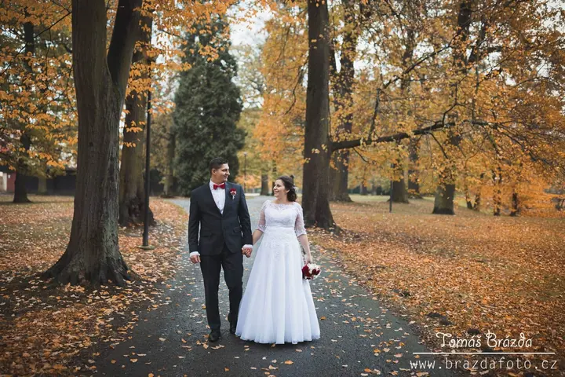

jedna
Svatby
Svatby jsou na mém webu na prvním místě. Fotím celý den od obřadu v kostele nebo pod širým nebem přes procházku a portréty až po přípitek a první tanec.


Jmenuji se Tomáš Brázda a pod značkou Brazdafoto fotím svatby, rodiny, páry i děti. Na svatbě s vámi strávím celý den, od příchodu k oltáři až po první tanec.
Více o mně
Co fotím
jedna
Svatby jsou na mém webu na prvním místě. Fotím celý den od obřadu v kostele nebo pod širým nebem přes procházku a portréty až po přípitek a první tanec.
dvě
Rodinné focení pro rodiče, děti i celou rodinu najednou. Fotím i těhotenské fotky, aby vám zůstala památka na čas před narozením miminka.
tři
Focení ve dvou, třeba jako dárek nebo jen tak pro radost. Domluvíme se, kde a kdy vám to bude nejvíc vyhovovat.
Kromě lidí fotím i nemovitosti. Pořizuji fotky domů a bytů, které se hodí do realitní inzerce.
Od prvního ano po poslední tanec


Za objektivem
Jmenuji se Tomáš Brázda a fotím pod značkou Brazdafoto. Většinu mé práce tvoří svatby. Na fotkách z nich najdete obřady v kostele i venku, procházky v parku, přípitky a tancování na sále.
Fotím ale i rodiny, páry, děti a těhotenské fotky. Každé focení mám v portfoliu pod jménem rodiny nebo páru, protože to jsou pro mě konkrétní lidé, ne zakázky.
Kromě lidí fotím i nemovitosti pro realitní inzerci. Když se mi ozvete e-mailem nebo zavoláte, rád s vámi probereme, co si představujete.
Tomáš
Napište mi e-mail nebo zavolejte a dejte mi vědět termín a místo. Hned vám řeknu, jestli mám volno.
Probereme, jak bude váš den vypadat, co je pro vás důležité a kde budeme fotit.
Na svatbě jsem s vámi od obřadu přes portréty až po hostinu. U rodinného focení si dáme čas, aby se všichni cítili dobře.
Fotky pečlivě vyberu a upravím a pošlu vám je v hotové podobě.
Portfolio
Fotografie jsou ilustrační
Otázky
Ano. Fotím také rodiny, páry, děti a těhotenské fotky a kromě toho i nemovitosti pro realitní inzerci.
Ozvat se mi můžete z Přerova i odjinud. Místo a případnou cestu spolu vždycky domluvíme.
Cena se odvíjí od typu a délky focení. Napište mi, co plánujete, a pošlu vám konkrétní nabídku.
Stačí mi napsat na brazdafoto@gmail.com nebo zavolat na 776 056 645. Jakmile se domluvíme, termín vám zapíšu.
Napište pár vět o tom, co si představujete. · +420 776 056 645